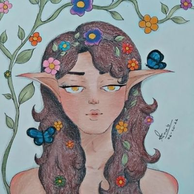
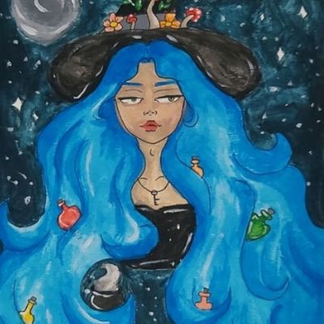
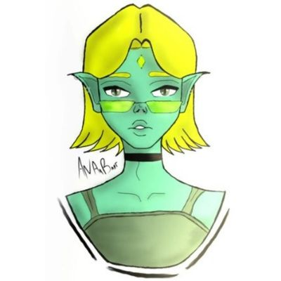

Sobre Mim
Oiii, me chamo Ana Beatriz Cordeiro Guimarães, mas pode me chamar de Bia! Nasci em Guarulhos, São Paulo, e atualmente moro em uma cidade pequena no estado da Bahia. Desde que me entendo por gente, curto desenhar e pintar e, através disso, surgiu o meu interesse por moda e maquiagem: não há nada melhor do que usar a criatividade para desenhar looks incríveis!
Criei esse blog com o objetivo de compartilhar tudo o que sei com vocês e tirar muitas dúvidas - principalmente das mulheres - sobre como arrasar em qualquer lugar e ocasião. Ele é o resultado da minha paixão por moda, desfiles, desenhos, pinturas, culturas, viagens e coisas "diferentonas" e, por isso, tudo é feito com muito carinho (quando meu gatinho Jeff e minha cachorrinha Tutuka deixam que eu escreva aqui). Espero que você tenha uma boa leitura e que saiba que é muito bem-vindo (a).
Aproveitando, deixarei aqui meu Instagram de desenhos e algumas fotos. Se assim desejar, fique a vontade para me seguir ;)
https://www.instagram.com/anaaabart/
|

Flower Lover |

A Witch With Her Magic Hair |

Green |